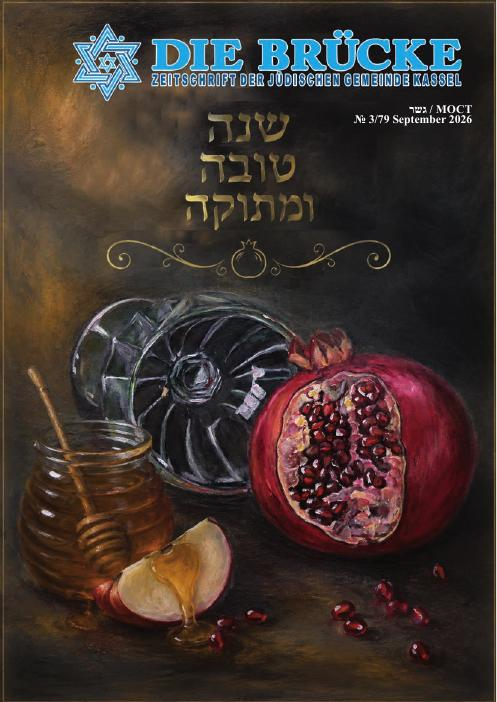

Die Jüdische Gemeinde Kassel ist ein Ort des Gebets, des Lernens und der Begegnung – für Mitglieder, Gäste und alle Kasselerinnen und Kasseler.
Aktivitäten Synagogenführung anfragenJüdisches Leben in Kassel seit dem Mittelalter – Zerstörung, Neuanfang und die neue Synagoge von 2000.
Mehr erfahren →Gottesdienste an Schabbat und Feiertagen, Rabbinat, Lebensereignisse und Friedhof.
Mehr erfahren →Kultur, Seniorenclub, Jugend und soziale Beratung für alle Generationen. Angebote ergänzen
Mehr erfahren →
Die neue Ausgabe unserer Gemeindezeitung zu Rosch Haschana 5787 – jetzt online lesen.
LesenKonzert und festliche Seuda zum Lichterfest. Die Uhrzeit geben wir bald bekannt.
AnmeldungLernen Sie die Kasseler Synagoge, jüdische Traditionen und die Geschichte der Gemeinde kennen. Termine nach Vereinbarung.
AnmeldungMit Ihrer Spende fördern Sie Gottesdienste, Bildung, Kultur und soziale Arbeit der Jüdischen Gemeinde Kassel. Auf Wunsch stellen wir eine Spendenbescheinigung aus. prüfen
| Empfänger | Jüdische Gemeinde Kassel |
| IBAN | DE59 5209 0000 0013 0473 32 |
| Bank | Kasseler Bank eG – prüfen |
| Verwendungszweck | Spende |
Entdecken Sie die Synagoge in der Bremer Straße – für Gruppen, Schulen und alle Interessierten.
Führung anfragen